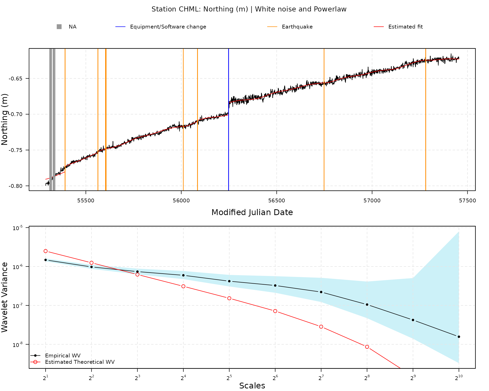
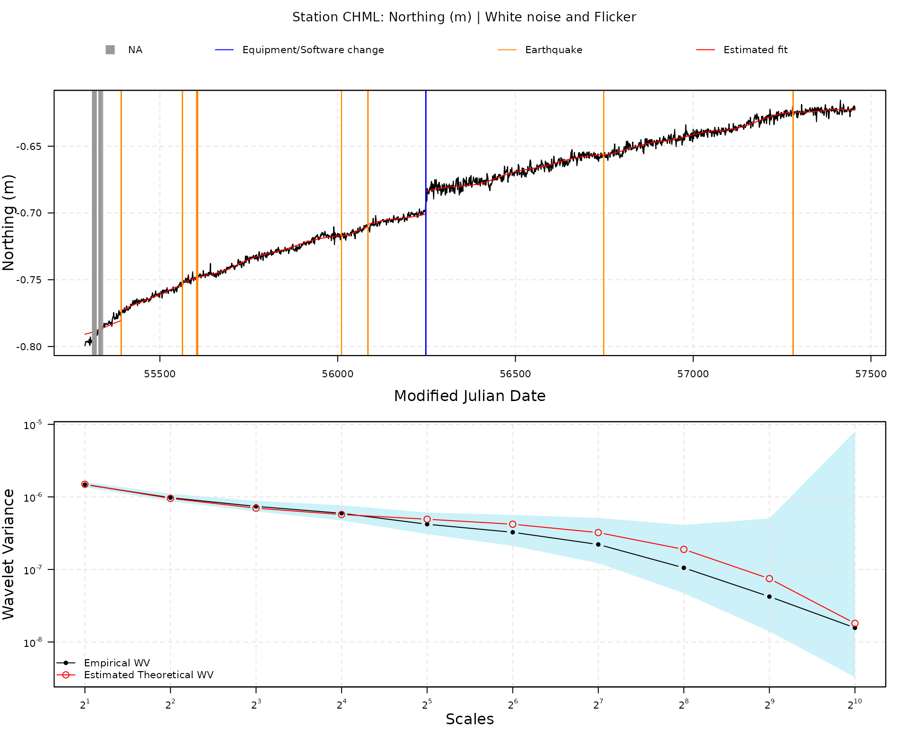

Model and estimator
The gmwmx2 R package allows to estimate
linear model with correlated residuals in presence of missing data.
More precisely, we assume the following model: \[\begin{equation} \boldsymbol{Y} = \boldsymbol{X} \boldsymbol{\beta} + \boldsymbol{\varepsilon}, \quad \boldsymbol{\varepsilon} \sim \mathcal{F}\left\{\boldsymbol{\Sigma}\left(\boldsymbol{\gamma}\right)\right\}, \end{equation}\]
where \(\boldsymbol{X} \in \mathbb{R}^{n \times p}\) is a design matrix of observed predictors, \(\boldsymbol{\beta} \in \mathbb{R}^p\) is the regression parameter vector and \(\boldsymbol{\varepsilon} = \{\varepsilon_{i}\}_{i=1,\ldots,n}\) is a zero-mean process following an unspecified joint distribution \(\mathcal{F}\) with positive-definite covariance function \(\boldsymbol{\Sigma}(\boldsymbol{\gamma}) \in \mathbb{R}^{n\times n}\) characterizing the second-order dependence structure of the process and parameterized by the vector \(\boldsymbol{\gamma} \in \boldsymbol{\Gamma} \subset \mathbb{R}^q\).
We then define the a random variable \(\boldsymbol{Z} =\{Z_{i}\}_{i=1,\ldots,n}\) which describes the missing observation mechanism. More specifically, the vector \(\boldsymbol{Z} \in \{0, 1\}^n\) is a binary-valued stationary process independent of \(\boldsymbol{Y}\) with expectation \(\mu(\boldsymbol{\vartheta}) = \mathbb{E}[Z_i] \in [0, \, 1)\), \(\forall \, i\), and covariance matrix \(\boldsymbol{\Lambda}(\boldsymbol{\vartheta}) = \mathbb{V}[\boldsymbol{Z}] \in \mathbb{R}^{n\times n}\) whose structure is assumed known up to the parameter vector \(\boldsymbol{\vartheta} \in \boldsymbol{\Upsilon} \subset \mathbb{R}^k\)
We then assume that we only observe the stochastic process \(\tilde{\boldsymbol{Y}} = \boldsymbol{Z} \odot \boldsymbol{Y}\), where \(\odot\) denotes the Hadamard product. Hence, \(\tilde{\boldsymbol{Y}} \in \mathbb{R}^n = \boldsymbol{Y} \odot \boldsymbol{Z}\) represents the observed process vector with null elements in the positions where observations are missing.
Using \(\otimes\) to denote the Kronecker product, we then define \(\tilde{\boldsymbol{X}} = \boldsymbol{Z} \otimes \boldsymbol{1}^T \odot \boldsymbol{X} \in \mathbb{R}^{n \times p}\) as the design matrix \(\boldsymbol{X}\) with zero-valued vectors for the rows where observations are missing in \(\boldsymbol{Y}\) (where \(\boldsymbol{1}\) represents a vector of ones of dimension \(p\)).
We estimate the parameters \(\boldsymbol{\beta}\) with the least square estimator:
\[\begin{equation} \hat{\boldsymbol{\beta}} = \left(\tilde{\boldsymbol{X}}^T \tilde{\boldsymbol{X}}\right)^{-1} \tilde{\boldsymbol{X}}^T \tilde{\boldsymbol{Y}}. \end{equation}\]
We compute the estimated residuals as \(\hat{\boldsymbol{\varepsilon}} = {\tilde{\boldsymbol{Y}}} - \tilde{{\boldsymbol{X}}} \hat{\boldsymbol{\beta}}\).
We then estimate with the Maximum Likelihood Estimator the parameters \(\boldsymbol{\vartheta}\) of the missingness process \(\boldsymbol{Z}\) assuming that \(\boldsymbol{Z}\) is generated from a Markov model with the following transition probabilities:
\[\begin{equation} \label{eq:markov_model_def} \begin{aligned} & P\left( Z_2=1 \mid Z_1=1\right)=1 - p_1 \\ & P\left(Z_2=1 \mid Z_1=0\right) = p_2 \\ & P\left(Z_2=0 \mid Z_1=1\right)=p_1 \\ & P\left(Z_2=0 \mid Z_1=0\right)=1-p_2. \end{aligned} \end{equation}\]
We then estimate the parameters \(\boldsymbol{\gamma}\) using a Generalized method of Wavelet Moments approach (Guerrier et al. 2013) and using the fact that the variance-covariance matrix of \(\hat{\boldsymbol{\varepsilon}}\) is given by:
\[\boldsymbol{\Sigma}_{\hat{\boldsymbol{\varepsilon}}}(\boldsymbol{\gamma}) = [\boldsymbol{\Lambda}(\hat{\boldsymbol{\vartheta}}) + \mu(\hat{\boldsymbol{\vartheta}})^2 \mathbf{1} \mathbf{1}^T ] \odot ( \boldsymbol{I} - \boldsymbol{P})\boldsymbol{\Sigma}(\boldsymbol{\gamma}) (\boldsymbol{I} - \boldsymbol{P})\]
where \(\boldsymbol{P} = \boldsymbol{X}(\boldsymbol{X}^T\boldsymbol{X})^{-1}\boldsymbol{X}^T\) and \(\boldsymbol{I}\) is the identity matrix of dimension \(n\times n\).
More precisely, we rely on the result of Xu et al. (2017) that provide a computationally efficient form of the theoretical Allan variance (equivalent to the Haar wavelet variance up to a constant) for zero-mean stochastic processes such as \(\boldsymbol{\varepsilon}\) to avoid computing these large matrices multiplication in the objective function. Indeed in Xu et al. (2017) they generalize the results in Zhang (2008) to zero-mean non-stationary processes by using averages of the diagonals and super-diagonals of the covariance matrix of \(\boldsymbol{\varepsilon}\). What this implies is that the GMWM, which uses this form, does not require the storage of the \(n \times n\) covariance matrix of \(\boldsymbol{\varepsilon}\), but only of a vector of dimension \(n\) which is then plugged into an explicit formula consisting in a linear combination of the elements of this vector (these elements being averages of the diagonal and super-diagonals of the covariance matrix).
Estimating tectonic velocities and crustal uplift
While the GMWMX as described above and in more details in Voirol et al. (2024), is a general method for
estimating large linear model with complex dependence structure in
presence of missing data, the gmwmx2 R package
is currently developed specifically to estimate tectonic velocities from
position times series in graticule distance coordinates system (GD)
provided by the Nevada geodetic Laboratory (Blewitt 2024; Blewitt, Hammond, and Kreemer
2018).
Trajectory model
To estimate the trajectory model (see e.g., Bevis and Brown (2014) for more details), we construct the design matrix \(\boldsymbol{X}\) such that \(i\)-th component of the vector \(\mathbf{X} {{\boldsymbol{\beta}}}\) can be described as follows with \(t_i\) representing the \(i^{th}\) ordered time point (epoch) indicated in Modified Julian Date and \(t_0\) representing the reference epoch located exactly in the middle of start and end point of the time series:
\[\begin{split} \mathbb{E}[\mathbf{Y}_i] &= \mathbf{X}_i^T {{\boldsymbol{\beta}}} \\ &= a + b \left(t_{i} - t_0\right) + \sum_{h=1}^{m}\left[c_{h} \sin \left(2 \pi f_{h} t_{i}\right) + d_h \cos \left(2 \pi f_h t_i\right)\right] + \\& \sum_{j=1}^{r}e_j H\left(t_i - t_j\right) + \sum_{k = 1 }^{s} l_k \left[1- \exp\left(\frac{-(t_i-t_k)}{\tau_k}\right)\right]H\left(t_{i}-\tau_k\right) \end{split}\]where \(a\) is the initial position at the reference epoch \(t_0\), \(b\) is the velocity parameter, \(c_h\) and \(d_h\) are the periodic motion parameters (\(h = 1\) and \(h = 2\) represent the annual and semi-annual seasonal terms, respectively with \(f_1 = \frac{1}{365.25}\) and \(f_2 = \frac{2}{365.25}\)). The offset terms models earthquakes, equipment changes or human intervention in which \(e_j\) is the magnitude of the step at epochs \(t_j\), \(r\) is the total number of offsets, \(H\) is the Heaviside step function defined as \(H(x):= \begin{cases}1, & x \geq 0 \\ 0, & x<0\end{cases}\) and the last term allow to model post-seismic deformation (see e.g., Sobrero et al. (2020)) where \(s\) is the number of post seismic relaxation time specified, \(t_k\) is the time when the relaxation \(k\) starts in Modified Julian Date (MJD), \(\tau_k\) is the relaxation period in days for the post-seismic relaxation \(k\) and \(l_k\) is the amplitude of the transient. Note that by default the estimates of the functional parameters are provided in unit/day.
When loading data from a specific station using the function
gmwmx2::download_station_ngl(), we extract from the Nevada
Geodetic Laboratory the position time series in GD coordinates, the time
steps associated with a equipment or software change and the time steps
associated with an earthquake near the station. All these objects are
stored in a object of class gnss_ts_ngl.
When applying the function gmwmx2::gmwmx2() to an object
of class gnss_ts_ngl, we construct the design matrix \(\boldsymbol{X}\) by considering an offset
term for all equipment or software changes steps and all earthquakes
indicated by the NGL. We also specify a post-seismic relaxation term for
all earthquakes indicated by the NGL. If no relaxation time is specified
in the argument vec_earthquakes_relaxation_time, we
consider a default relaxation time of \(365.25\) days.
Stochastic model
It is generally recognized that noise in GNSS time series is best described by a combination of colored noise plus white noise (He et al. 2017; Langbein 2008; Williams et al. 2004; Bos et al. 2013) where the white noise generally model noise at high frequencies and the colored noise model the lower frequencies of the spectrum. In a large study on the noise properties of GNSS signals, concluded that the optimal noise models for 80–90% of GNSS time series signals are the power law and white noise model or white noise and flicker/pink noise with model. The package currently support both stochastic model specification.
More precisely, the power spectrum of a power-law noise has the following form: \[ P(f)=P_0\left(f / f_s\right)^\kappa \] where \(f\) is the frequency, \(P_0\) is a constant, \(f_s\) the sampling frequency and the exponent \(\kappa\) is called the spectral index.
Many stochastic noise can be expressed as such, for example, a spectral index \(\kappa=0\) produces a white noise, a spectral index \(\kappa=-2\) produces a red noise or random walk and a spectral index \(\kappa=-1\) produce a flicker noise, also called pink noise.
Granger (1980) and Hosking (1981) showed that power-law noise with a spectral index between \(-1\) and \(1\) can be obtained by using fractional differencing of Gaussian noise:
\[ (1-B)^{-\kappa / 2} \mathbf{v} \]
where \(B\) is the backward-shift operator \(\left(B v_i=v_{i-1}\right)\) and \(\mathbf{v}\) a vector with independent and identically distributed (IID) Gaussian noise.
Following from Hosking’s definition of the fractional differencing, we obtain
\[ \begin{aligned} (1-B)^{-\kappa / 2} & =\sum_{i=0}^{\infty}\binom{-\kappa / 2}{i}(-B)^i \\ & =1-\frac{\kappa}{2} B-\frac{1}{2} \frac{\kappa}{2}\left(1-\frac{\kappa}{2}\right) B^2+\ldots \\ & =\sum_{i=0}^{\infty} h_i \end{aligned} \] with the coefficient \(h_i\) that can be computed using the following recurrence relation (Kasdin and Walter 1992):
\[ \begin{aligned} h_0 & =1 \\ h_i & =\left(i-\frac{\kappa}{2}-1\right) \frac{h_{i-1}}{i} \quad \text { for } i>0 \end{aligned} \]
Assuming an infinite sequence of zero-mean white noise \(\mathbf{v}\), with variance \(\sigma_{P L}^2\), and a spectral index \(kappa > -1\) then the autocovariance \(\gamma(\tau)=\operatorname{Cov}\left(X_t, X_{t+\tau}\right)=\mathbb{E}\left[\left(X_t-\mu\right)\left(X_{t+\tau}-\mu\right)\right]\) is (Bos et al. 2008):
\[
\begin{aligned}
& \gamma(0)=\sigma_{p l}^2
\frac{\Gamma(1-\alpha)}{\left(\Gamma\left(1-\frac{\alpha}{2}\right)\right)^2}
\\
&
\gamma(\tau)=\frac{\frac{\alpha}{2}+\tau-1}{-\frac{\alpha}{\alpha}+\tau}
\gamma(\tau-1) \text { for } \tau>0
\end{aligned}
\] When the argument stochastic_model is set to
"wn + pl", the stochastic model considered includes both
white noise and power-law with the specified above stationary
autocovariance structure. The parameters estimated are: \(\sigma^2_{W N}\), \(\kappa\) (constrained to be greater than
\(-1\)) and \(\sigma^2_{P L}\).
When the argument stochastic_model is set to
"wn + fl", the stochastic model considered includes both
white noise and flicker noise (not stationary power-law noise with a
spectral index \(\kappa=-1\)) where the
variance covariance of the flicker noise \(\omega\) is obtained as follows (see e.g.,
(Bos et al. 2008)):
\[ \operatorname{Cov}(\omega) = \sigma^2_{F L}\mathbf{U}^T \mathbf{U} \]
where \[ \mathbf{U}=\left(\begin{array}{cccc} h_0 & h_1 & \ldots & h_n \\ 0 & h_0 & & h_{n-1} \\ \vdots & & \ddots & \vdots \\ 0 & 0 & \ldots & h_0 \end{array}\right) \] with the coefficients \(h_i\) computed considering a spectral index \(\kappa=-1\).
The stochastic parameters estimated are: \(\sigma^2_{W N}\), \(\sigma^2_{F L}\) and \(\kappa\) is fixed to \(-1\).
Example of estimation
Let us showcase how to estimate the tectonic velocity in for one specific component (North, East or Vertical) of one station.
Let us first load the gmwmx2 package.
Download a station from Nevada Geodetic Laboratory
station_data <- download_station_ngl("CHML")Estimate model on station data
fit1 <- gmwmx2(station_data, n_seasonal = 2, component = "N", stochastic_model = "wn + pl")Extract estimated parameters
summary(fit1)## Summary of Estimated Model
## -------------------------------------------------------------
## Functional parameters
## -------------------------------------------------------------
## Parameter Estimate Std_Deviation 95% CI Lower 95% CI Upper
## -------------------------------------------------------------
## Intercept -0.70909375 0.00173188 -0.71248817 -0.70569934
## Trend 0.00007383 0.00000165 0.00007059 0.00007707
## Sin (Annual) -0.00066336 0.00006842 -0.00079746 -0.00052927
## Cos (Annual) 0.00077064 0.00007417 0.00062527 0.00091602
## Sin (Semi-Annual) 0.00073582 0.00006210 0.00061410 0.00085754
## Cos (Semi-Annual) -0.00030933 0.00006314 -0.00043309 -0.00018557
## Jump: MJD 56248 0.01697696 0.00038277 0.01622675 0.01772718
## Jump: MJD 55391 0.00754302 0.00038771 0.00678312 0.00830292
## Jump: MJD 55563 0.00163803 0.00064910 0.00036583 0.00291024
## Jump: MJD 55603 0.00276825 0.00178919 -0.00073850 0.00627499
## Jump: MJD 55606 0.00077484 0.00283239 -0.00477654 0.00632623
## Jump: MJD 56011 -0.00118520 0.00048797 -0.00214160 -0.00022881
## Jump: MJD 56085 0.00127046 0.00049789 0.00029461 0.00224631
## Jump: MJD 56748 -0.00068122 0.00024164 -0.00115484 -0.00020761
## Jump: MJD 57281 -0.00035896 0.00037781 -0.00109946 0.00038154
## Earthquake: MJD 55391 0.01819421 0.00163822 0.01498337 0.02140505
## Earthquake: MJD 55563 0.00092715 0.00985944 -0.01839699 0.02025129
## Earthquake: MJD 55603 -0.37283777 0.47935470 -1.31235572 0.56668017
## Earthquake: MJD 55606 0.36328081 0.47535555 -0.56839895 1.29496057
## Earthquake: MJD 56011 0.00451098 0.00415732 -0.00363722 0.01265918
## Earthquake: MJD 56085 -0.01897612 0.00361553 -0.02606243 -0.01188982
## Earthquake: MJD 56748 -0.00957194 0.00096029 -0.01145406 -0.00768981
## Earthquake: MJD 57281 -0.02302075 0.00142093 -0.02580572 -0.02023577
## -------------------------------------------------------------
## Stochastic parameters
## -------------------------------------------------------------
## White Noise Variance : 0.00000503
## Stationary powerlaw Spectral index: 0.99999862
## Stationary powerlaw Variance: 0.00000000
## -------------------------------------------------------------
## Missingness parameters
## -------------------------------------------------------------
## P(Z_{i+1} = 0 | Z_{i} = 1): 0.00279460
## P(Z_{i+1} = 1 | Z_{i} = 0): 0.31578947
## \hat{E[Z]}: 0.99122807
## -------------------------------------------------------------
## Running time: 0.75 seconds
## -------------------------------------------------------------By default, the estimated parameters are provided in m/day, we can
optionally scale the estimated functional parameters so that they are
returned in m/year with the argument scale_parameters.
summary(fit1, scale_parameters = TRUE)## Summary of Estimated Model
## -------------------------------------------------------------
## Functional parameters
## -------------------------------------------------------------
## Parameter Estimate Std_Deviation 95% CI Lower 95% CI Upper
## -------------------------------------------------------------
## Intercept -258.99649344 0.63256737 -260.23630270 -257.75668417
## Trend 0.02696692 0.00060436 0.02578239 0.02815145
## Sin (Annual) -0.24229327 0.02498969 -0.29127217 -0.19331437
## Cos (Annual) 0.28147693 0.02709174 0.22837810 0.33457575
## Sin (Semi-Annual) 0.26875991 0.02268320 0.22430166 0.31321816
## Cos (Semi-Annual) -0.11298102 0.02306338 -0.15818441 -0.06777764
## Jump: MJD 56248 6.20083621 0.13980687 5.92681979 6.47485263
## Jump: MJD 55391 2.75508821 0.14161195 2.47753390 3.03264253
## Jump: MJD 55563 0.59829213 0.23708305 0.13361790 1.06296637
## Jump: MJD 55603 1.01110216 0.65350145 -0.26973715 2.29194146
## Jump: MJD 55606 0.28301205 1.03453045 -1.74463038 2.31065448
## Jump: MJD 56011 -0.43289581 0.17822922 -0.78221867 -0.08357296
## Jump: MJD 56085 0.46403594 0.18185540 0.10760590 0.82046598
## Jump: MJD 56748 -0.24881736 0.08826043 -0.42180462 -0.07583011
## Jump: MJD 57281 -0.13111171 0.13799620 -0.40157930 0.13935587
## Earthquake: MJD 55391 6.64543546 0.59835815 5.47267502 7.81819589
## Earthquake: MJD 55563 0.33864093 3.60115960 -6.71950219 7.39678406
## Earthquake: MJD 55603 -136.17899727 175.08430306 -479.33792553 206.97993099
## Earthquake: MJD 55606 132.68831606 173.62361459 -207.60771540 472.98434753
## Earthquake: MJD 56011 1.64763593 1.51846100 -1.32849294 4.62376480
## Earthquake: MJD 56085 -6.93102876 1.32057171 -9.51930174 -4.34275578
## Earthquake: MJD 56748 -3.49614936 0.35074412 -4.18359521 -2.80870352
## Earthquake: MJD 57281 -8.40832800 0.51899526 -9.42554002 -7.39111599
## -------------------------------------------------------------
## Stochastic parameters
## -------------------------------------------------------------
## White Noise Variance : 0.00000503
## Stationary powerlaw Spectral index: 0.99999862
## Stationary powerlaw Variance: 0.00000000
## -------------------------------------------------------------
## Missingness parameters
## -------------------------------------------------------------
## P(Z_{i+1} = 0 | Z_{i} = 1): 0.00279460
## P(Z_{i+1} = 1 | Z_{i} = 0): 0.31578947
## \hat{E[Z]}: 0.99122807
## -------------------------------------------------------------
## Running time: 0.75 seconds
## -------------------------------------------------------------Plot estimated model
plot(fit1)
fit2 <- gmwmx2(station_data, n_seasonal = 2, component = "N", stochastic_model = "wn + fl")
summary(fit2)## Summary of Estimated Model
## -------------------------------------------------------------
## Functional parameters
## -------------------------------------------------------------
## Parameter Estimate Std_Deviation 95% CI Lower 95% CI Upper
## -------------------------------------------------------------
## Intercept -0.70909375 0.01066519 -0.72999715 -0.68819036
## Trend 0.00007383 0.00001016 0.00005391 0.00009375
## Sin (Annual) -0.00066336 0.00040724 -0.00146153 0.00013481
## Cos (Annual) 0.00077064 0.00042793 -0.00006809 0.00160938
## Sin (Semi-Annual) 0.00073582 0.00026087 0.00022454 0.00124711
## Cos (Semi-Annual) -0.00030933 0.00027063 -0.00083974 0.00022109
## Jump: MJD 56248 0.01697696 0.00179981 0.01344939 0.02050453
## Jump: MJD 55391 0.00754302 0.00171565 0.00418040 0.01090564
## Jump: MJD 55563 0.00163803 0.00178150 -0.00185363 0.00512970
## Jump: MJD 55603 0.00276825 0.00219231 -0.00152859 0.00706509
## Jump: MJD 55606 0.00077484 0.00332771 -0.00574734 0.00729703
## Jump: MJD 56011 -0.00118520 0.00180644 -0.00472576 0.00235535
## Jump: MJD 56085 0.00127046 0.00187483 -0.00240414 0.00494506
## Jump: MJD 56748 -0.00068122 0.00176286 -0.00413637 0.00277393
## Jump: MJD 57281 -0.00035896 0.00176295 -0.00381428 0.00309635
## Earthquake: MJD 55391 0.01819421 0.00873109 0.00108158 0.03530684
## Earthquake: MJD 55563 0.00092715 0.02591243 -0.04986029 0.05171458
## Earthquake: MJD 55603 -0.37283777 0.48867274 -1.33061874 0.58494319
## Earthquake: MJD 55606 0.36328081 0.48325352 -0.58387868 1.31044030
## Earthquake: MJD 56011 0.00451098 0.01414518 -0.02321306 0.03223502
## Earthquake: MJD 56085 -0.01897612 0.01363705 -0.04570426 0.00775201
## Earthquake: MJD 56748 -0.00957194 0.00680936 -0.02291803 0.00377416
## Earthquake: MJD 57281 -0.02302075 0.00761179 -0.03793957 -0.00810192
## -------------------------------------------------------------
## Stochastic parameters
## -------------------------------------------------------------
## White Noise Variance : 0.00000159
## Flicker Noise Variance: 0.00000224
## -------------------------------------------------------------
## Missingness parameters
## -------------------------------------------------------------
## P(Z_{i+1} = 0 | Z_{i} = 1): 0.00279460
## P(Z_{i+1} = 1 | Z_{i} = 0): 0.31578947
## \hat{E[Z]}: 0.99122807
## -------------------------------------------------------------
## Running time: 0.75 seconds
## -------------------------------------------------------------
plot(fit2)